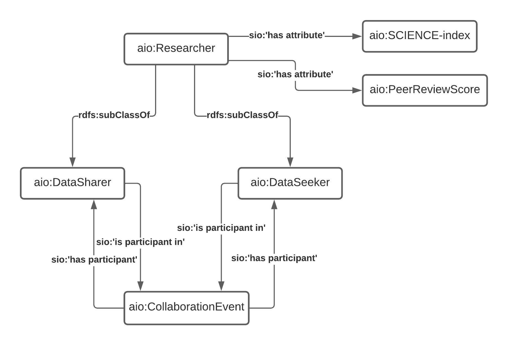

The Academic Incentive Ontology
The Academic Incentive Ontology (AIO) intends to provide a semantic model to power a blockchain application to handle, confirm, and incentivize research data sharing. The ontology is built upon basic blockchain components such as addresses and transaction hashes and uses simple logic such that it could be easily handled by smart contracts

Principle agent, aio:Researcher, and its associations
Ontology Links
- Ontology Documnetation generated using the Widoco tool can be found here: AIO Widoco Documentation
- The AIO owl file can found here: aio.owl
Ontology Metadata
Ontologies Reused
Ontology Prefixes
| Prefix | Links |
|---|---|
| rdf | Resource Description Framework |
| rdfs | RDF Schema |
| owl | Web Ontology Language |
| xsd | XML Schema Definition |
| skos | Simple Knowledge Organization System |
| aio | Academic Incentive Ontology |
| sio | SemanticScience Integrated Ontology |
| ep | Provenance Ontology |